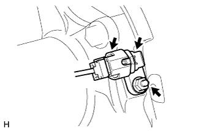
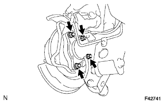
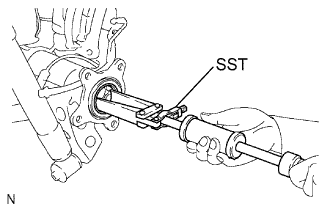

ВАЛ ЗАДНЕЙ ПОЛУОСИ > СНЯТИЕ |
| 1. ОТСОЕДИНИТЕ ПРОВОД ОТ ОТРИЦАТЕЛЬНОГО ВЫВОДА АККУМУЛЯТОРНОЙ БАТАРЕИ |
| 2. СНИМИТЕ ЗАДНЕЕ КОЛЕСО |
| 3. СЛЕЙТЕ ТОРМОЗНУЮ ЖИДКОСТЬ |
| 4. ОТСОЕДИНИТЕ ЗАДНИЙ ЛЕВЫЙ ГИБКИЙ ШЛАНГ |
 |
Снимите пустотелый соединительный болт-штуцер и прокладку с колесного тормозного цилиндра заднего дискового тормоза, а затем отсоедините от тормозного цилиндра задний гибкий шланг.
| 5. СНИМИТЕ ЗАДНИЙ ЛЕВЫЙ ДАТЧИК ЧАСТОТЫ ВРАЩЕНИЯ |
|  |
Отсоедините разъем датчика частоты вращения.
Отверните гайку и снимите датчик частоты вращения.
| 6. СНИМИТЕ СТОЯНОЧНЫЙ ТОРМОЗ В СБОРЕ |
Снимите стояночный тормоз в сборе (Нажмите здесь).
| 7. СНИМИТЕ ВАЛ ЛЕВОЙ ЗАДНЕЙ ПОЛУОСИ С ПЛАСТИНОЙ СТОЯНОЧНОГО ТОРМОЗА |
|  |
Отверните 4 гайки и снимите вал задней полуоси с пластиной стояночного тормоза.
Снимите кольцевое уплотнение.
| 8. СНИМИТЕ САЛЬНИК ВАЛА ЛЕВОЙ ЗАДНЕЙ ПОЛУОСИ |
|  |
С помощью SST снимите сальник вала задней полуоси.